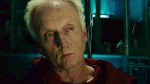

Cos'è Saw?
Saw è una famosa saga horror creata da James Wan e Leigh Whannel; iniziata nel 2004 conta attualmente 10 film ed è ancora oggi una saga con una grande fetta di pubblico appassionato.
- Tutti i film in ordine d'uscita:
Trama principale:
La storia gira intorno a John Kramer(interpretato da Tobin Bell), un facoltoso ingegnere molto abile e ambizioso. Tuttavia la sua vita cambierà drasticamente quando per colpa di un incidente subito dalla moglie, perde suo figlio ancora prima della sua nascita e successivamente a ciò, gli verrà diagnosticato un cancro inoperabile, John ormai consapevole del suo destino decide di spendere gli ultimi suoi momenti di vita sperimentando trappole mortali mettendo alla prova persone che secondo la sua visione non apprezzano il dono della vita.
John Kramer(Jigsaw)
Apparizioni di John Kramer nei Film |
|||||||||
| Saw | Saw II | Saw III | Saw IV | Saw V | Saw VI | Saw VII | Saw:Legacy | Spiral:L'eredità di Saw | Saw X |
| appare | appare | appare | appare | appare | appare | appare | appare | menzionato | appare |